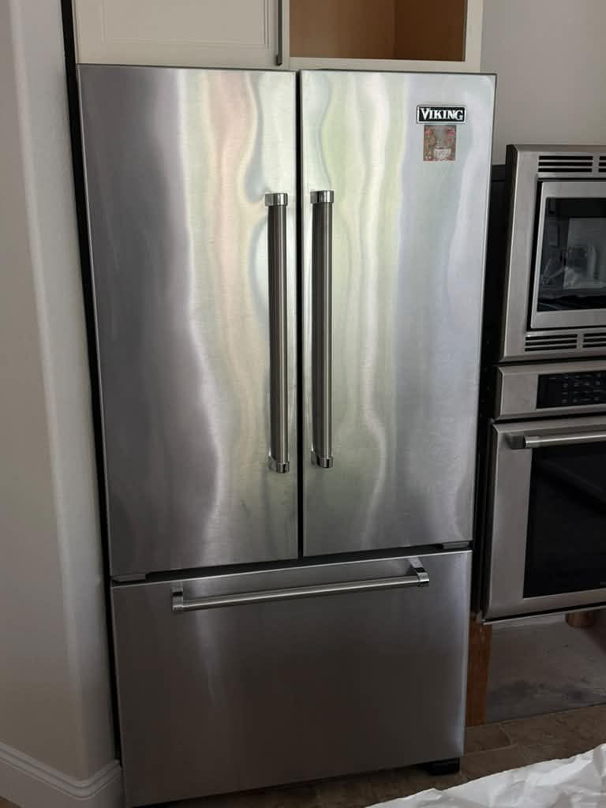
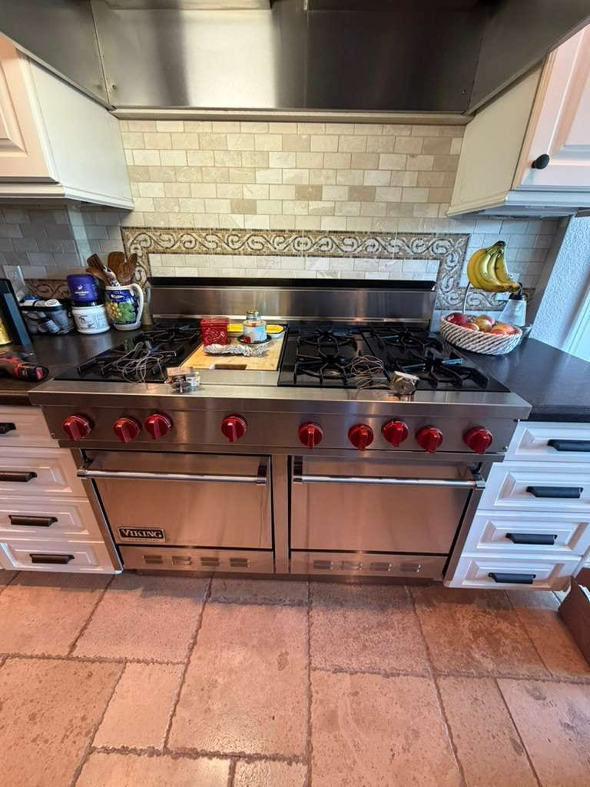
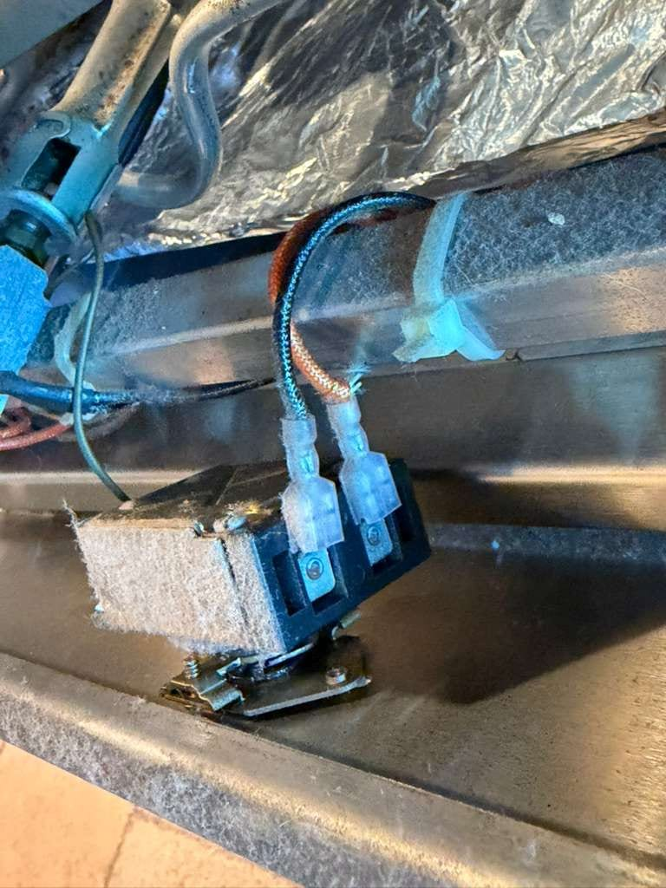

Viking Appliance Repair in Orange County, CA
Pro-style ranges, wall ovens, and built-in refrigerators. Same-day Viking service across Orange County.
5.0 · 156 Google reviewsMon–Sat, 8am–7pm.

What to expect
- Flat $99 diagnostic feeApplied toward the repair if you approve the work.
- Written quote firstItemized, before any work starts.
- 90-day parts, 30-day laborWarranty on every repair.
- Same-day serviceCall or request online.
Family-owned since 2017 · Licensed, bonded & insured
Recent Viking Repairs
Real Viking jobs our technicians completed include a refrigerator evaporator fan replacement in Costa Mesa and an oven repair for a no-heat complaint in Chino Hills, alongside earlier range and dishwasher jobs and a before-and-after burner head cleaning in Newport Beach. The two Pico Rivera jobs below have their own page: Viking repair in Pico Rivera. Our Viking refrigerator not cooling guide explains that fan and the other parts behind a warm fresh-food section.




What Our Customers Say
From our 156 verified 5-star Google reviews
Job was done quickly and results are great.
AG was great! Highly recommend!
Super reliable & goes above to help solve your problems!
How a Viking Repair Appointment Runs
From your first call to a fully working Viking range or oven. Here is what to expect at each step.
Request a RepairCall or Request Online
Reach us at (949) 629-5365 or submit the contact form. Tell us the Viking model and symptoms. Same-day scheduling available when a technician is open.On-Site Diagnosis
A technician arrives in a 2-hour window, tests the appliance, and identifies the root cause. Viking diagnostics require hands-on brand experience. We do not guess.Upfront Quote
You get a clear, itemized quote before we start. The $99 diagnostic fee applies toward the repair if you proceed. No surprise charges.Repair and Warranty
Most repairs finish the same day. Every repair carries a 90-day parts and 30-day labor warranty: if the same problem returns within 30 days, we come back at no charge.
Pricing & Discounts
- $99 diagnostic fee: applied toward your repair when you approve the work. If you decide not to proceed, the $99 covers the visit.
- Multi-unit visits: first unit $99, each additional unit on the same visit $49.
- 20% off labor for repeat customers and seniors 60+ (cannot combine with other offers).
Estimates vary by brand, part availability, and diagnosis. Final quote is provided before repair. See full pricing guide
Diagnostic visit$99
- Applied toward the repair when you approve the work
- Itemized written quote before any work starts
- You decide whether to proceed
VGSC, VGRT, and 7 Series: Viking Equipment We Service Daily
From the VGSC gas range to Viking's 7 Series built-in refrigerator and Designer dishwashers, covering every configuration we see in Orange County kitchens.
- VGSC and VGIC Gas Ranges
- The VGSC (standard) and VGIC (with griddle) professional gas ranges are Viking's most-serviced units in OC. Igniter failures are the single most common call. We carry igniter assemblies for the most popular VGSC configurations.
- VGRT and VRT Rangetops
- Viking sealed-burner rangetops in 30", 36", and 48" widths. Simmer burner orifice clogging and spark module failures are the most frequent service calls on these drop-in configurations.
- Pro 5 and Pro 7 Wall Ovens
- Single and double electric wall ovens in the Pro 5 and Pro 7 series. Bake and broil element replacement, control panel faults, and convection fan motor wear are the most common repairs we handle.
- 7 Series Built-In Refrigerators
- Viking's premium column and built-in refrigerators. Less common than Viking ranges in OC homes, but we service condenser fan, temperature control, and sealed-system issues on all 7 Series configurations.
- Designer Series Dishwashers
- Viking VDB and CVDB dishwashers. Control panel, drain pump, and door latch are the most frequent failure points. Parts are available and most repairs are completed in a single visit.
- VGBQ Outdoor Grills
- Viking professional outdoor grills with stainless steel burners and electronic ignition. Ignition system failures and gas valve issues are the most common outdoor grill service calls. We handle these on-site.
VGSC Igniters, Hinge Springs, and Viking's Known Failure Patterns
Viking appliances are built tough, but they have well-documented failure patterns specific to each model family. Here is what we diagnose most often across Orange County.
- Flat $99 diagnostic feeApplied toward the repair if you approve the work.
- Written quote firstItemized, before any work starts.
- 90-day parts, 30-day laborWarranty on every repair.
- Same-day serviceCall or book online.
Family-owned since 2017 · Licensed, bonded & insured
- The most common Viking service call by a wide margin. The VGSC igniter electrode wears at the tip over years of use. One burner stops lighting while others work fine. We carry common Viking igniter assemblies and resolve most cases same-day.
- Oven Door Hinge Spring Breakage
- The heavy oven door on VGSC and VGIC ranges stresses the hinge springs over time. A door that slams down or won't hold at the broil position has broken hinge springs. Replacement restores proper door function and is a mechanical fix with no electrical work involved.
- Bake and Broil Element Failure
- On Pro 5 and Pro 7 electric wall ovens, the bake or broil element burns out over time. The oven heats only partially or not at all depending on which element failed. Element replacement is one of the faster Viking repairs.
- Control Panel Failure on Dishwashers
- Viking Designer dishwasher control panels develop button failures and display faults. The panel governs cycle selection and wash parameters. Replacement restores full control. We confirm the panel is the fault before recommending it.
- 7 Series Condenser Fan Motor
- On Viking built-in column refrigerators, a failing condenser fan motor causes the fresh food compartment to run warm while the freezer stays cold. The fan is located near the compressor. Replacement is a direct mechanical swap.
- Simmer Burner Orifice Clogging
- The low-flame simmer burner orifice on VGSC and VGRT ranges is narrow by design and prone to clogging with grease. The flame is unstable or won't hold at the simmer position. A thorough cleaning or orifice replacement resolves it.
- Hot Surface Light Stays On
- When the cooktop indicator light stays on after the burner has cooled, the temperature sensor or control relay has failed. This is a safety system fault. We diagnose and replace the relevant component before the cooktop is returned to service.
- Convection Fan Motor Wear
- Pro 5 and Pro 7 wall ovens develop convection fan motor bearing wear over time, presenting as noise during baking cycles and eventually uneven heat distribution. Fan motor replacement is a straightforward repair that most homeowners notice as an immediate improvement.
- DCSProfessional gas and dual-fuel ranges, cooktops, and California-built outdoor grills. Bake igniter and sealed-burner specialists.
- Sub-ZeroBuilt-in refrigerators, wine storage, and column units.
- WolfDual-fuel ranges, wall ovens, and cooktops.
- MieleGerman luxury dishwashers, washers, dryers, and ovens.
- ThermadorPro Grand ranges, Sapphire dishwashers, and Freedom column fridges.
- DacorSamsung-backed American luxury brand. Heritage ranges, ovens, and refrigerators.
What Our Customers Say
From our 156 verified 5-star Google reviews
★★★★★
"Job was done quickly and results are great."
Kat Tesh, Orange County, CA
★★★★★
"AG was great! Highly recommend!"
Satara Armstrong Charlson, Orange County, CA
★★★★★
"Super reliable & goes above to help solve your problems!"
B P, Orange County, CA
VGSC, VGRT, and 7 Series: Viking Equipment We Service Daily
From the VGSC gas range to Viking's 7 Series built-in refrigerator and Designer dishwashers, covering every configuration we see in Orange County kitchens.
VGSC and VGIC Gas Ranges
The VGSC (standard) and VGIC (with griddle) professional gas ranges are Viking's most-serviced units in OC. Igniter failures are the single most common call. We carry igniter assemblies for the most popular VGSC configurations.
VGRT and VRT Rangetops
Viking sealed-burner rangetops in 30", 36", and 48" widths. Simmer burner orifice clogging and spark module failures are the most frequent service calls on these drop-in configurations.
Pro 5 and Pro 7 Wall Ovens
Single and double electric wall ovens in the Pro 5 and Pro 7 series. Bake and broil element replacement, control panel faults, and convection fan motor wear are the most common repairs we handle.
7 Series Built-In Refrigerators
Viking's premium column and built-in refrigerators. Less common than Viking ranges in OC homes, but we service condenser fan, temperature control, and sealed-system issues on all 7 Series configurations.
Designer Series Dishwashers
Viking VDB and CVDB dishwashers. Control panel, drain pump, and door latch are the most frequent failure points. Parts are available and most repairs are completed in a single visit.
VGBQ Outdoor Grills
Viking professional outdoor grills with stainless steel burners and electronic ignition. Ignition system failures and gas valve issues are the most common outdoor grill service calls. We handle these on-site.
VGSC Igniters, Hinge Springs, and Viking's Known Failure Patterns
Viking appliances are built tough, but they have well-documented failure patterns specific to each model family. Here is what we diagnose most often across Orange County.
Igniter Failure on VGSC and VGIC Ranges
Viking's Gas-First Engineering: What That Means for Your Repair
Viking built its reputation on open-burner design; unlike most residential ranges that use sealed burners, Viking VGSC and VGIC models expose the burner bowl to the cooking surface. This gives higher BTU output and easier cleaning, but it also means grease has a direct path to the igniter base. The majority of Viking igniter failures we see in Orange County are fouling issues first, electrode wear second. We clean and test before ordering parts on every VGSC call.
The VGSC oven door is heavier than comparable residential ranges because Viking uses thicker-gauge steel throughout the chassis. That weight is exactly why hinge spring failure is such a well-documented Viking service call: the springs are sized for the door load, but years of heavy use causes them to lose tension and eventually snap. VGSC door hinge springs are model-year-specific and not interchangeable with VGIC or rangetop configurations, so getting the right part matters.
Viking's blue accent handles and trim are more than a design choice; they require genuine Viking parts to maintain a match. Aftermarket blue hardware rarely matches the exact shade, which is obvious on any stainless range. When we replace Viking trim or handles as part of a repair, we source the OEM Viking component so the kitchen looks right when we leave.
What Viking Repairs Cost in Orange County
Viking repairs can cost more than standard appliance repairs. Compare the written repair estimate with a current replacement-and-installation quote for a comparable model.
| Repair Type | Typical Range |
|---|---|
| Service call / diagnostic: Orange County market average (often credited toward repair) | $95 – $150 |
| Igniter replacement (per burner) | $200 – $400 |
| Oven door hinge spring (pair) | $300 – $550 |
| Bake or broil element (wall oven) | $250 – $450 |
| Convection fan motor | $300 – $550 |
| Simmer burner orifice or cleaning | $150 – $300 |
| 7 Series condenser fan motor | $400 – $650 |
| Control panel (dishwasher) | $450 – $800 |
Estimates vary by brand, part availability, and diagnosis. Final quote is provided before repair.
See our full appliance repair cost guide for broader Orange County pricing context.
Viking repair across Orange County
Universal Appliances Repair Group Inc. provides Viking appliance repair across Orange County, California, covering VGSC and VGIC professional gas ranges, VGRT rangetops, Pro 5 and Pro 7 wall ovens, 7 Series built-in refrigerators, and Designer Series dishwashers. Common service includes igniter replacement on VGSC ranges, oven door hinge spring repair, control panel diagnostics, and refrigerator condenser fan service.
We serve Newport Beach, Irvine, Costa Mesa, Anaheim, Yorba Linda, Mission Viejo, and surrounding cities, with same-day service available. Call (949) 629-5365 or book online to schedule a Viking repair visit.
Viking Owners Ask Us These Questions First
Real questions from Orange County Viking range and oven owners.
Still have a question? Call (949) 629-5365.
Yes. We service Viking VGSC and VGIC professional gas ranges, VGRT rangetops, and all Pro 5 and Pro 7 series configurations across Orange County. Same-day appointments are available when a technician is open. Call (949) 629-5365.
Viking igniter replacement runs $200 to $400 per burner including parts and labor. VGSC and VGIC ranges are the most common Viking igniter calls we handle. We carry igniter assemblies for the most popular VGSC configurations on our service truck. The $99 diagnostic fee applies toward the repair if you proceed.
Yes. Viking oven door hinge spring breakage is a well-known failure on VGSC and VGIC ranges. The heavy oven door stresses the springs over years of use. Hinge spring replacement restores the door to proper operation and typically runs $300 to $550.
Yes. We service Viking 7 Series built-in column refrigerators, including condenser fan service, temperature control diagnostics, and sealed-system repairs. These units are less common than Viking ranges, but our technicians are experienced with the platform.
The hot surface indicator is controlled by a temperature sensor and relay on the control board. If the light stays on after the cooktop has fully cooled, the sensor or relay has failed. This is a safety system fault and should be diagnosed before continued use. Most repairs are completed same-day.
Yes. We service Viking Designer Series dishwashers. Common faults include control panel failures, drain pump issues, and door latch wear. Viking dishwasher parts are available and most repairs are completed in one visit.
Igniter replacement, hinge spring, simmer burner cleaning, and most burner repairs are done the same day. Control panel replacements and jobs that require special-order parts may take 2 to 4 additional days after the part arrives. We confirm the timeline after diagnosis.
In most cases, yes. Viking VGSC parts are still widely available and the ranges are built with heavy-gauge steel that lasts for decades. Repairs for common faults like igniter wear or hinge springs run $200 to $550. Compare the written repair estimate with a current replacement-and-installation quote for a comparable model before deciding.
Viking, Sub-Zero, Wolf: The Full Luxury Lineup We Cover
Viking is a specialty, but the same Orange County homes that own Viking ranges often have Sub-Zero refrigerators, Wolf cooktops, or Miele dishwashers too. We cover them all.
Need Viking Repair in Orange County?
Same-day service available. Call now or book online. A technician will confirm your appointment within the hour.
Call (949) 629-5365
Request a Repair
Mon–Sat, 8am–7pm